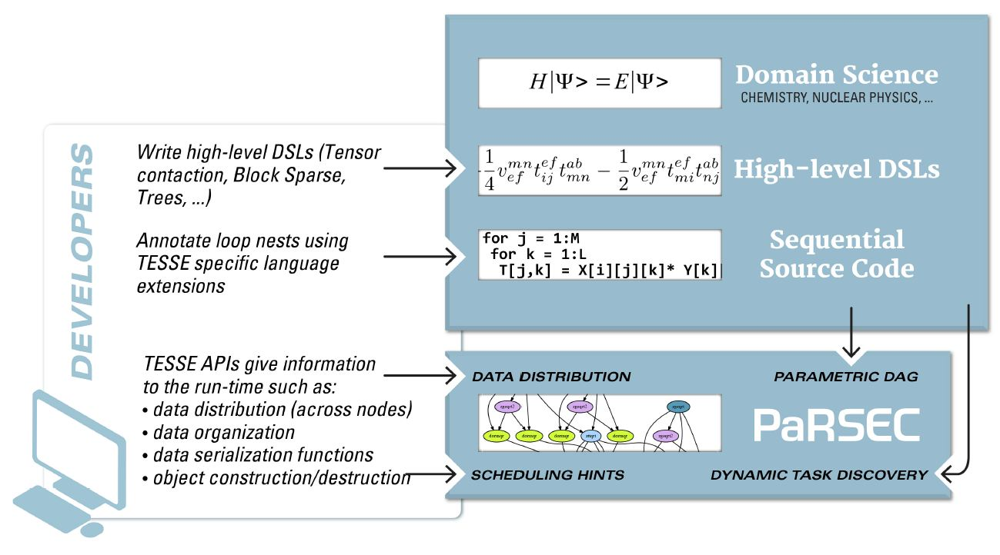

Challenges from Modern Computational Science
- Advances in predictive, high-fidelity simulation characterized by increasingly irregular and dynamic computation (sparse, low-rank, etc).
- Ongoing technology trends in heterogeneous architectures with dynamically changing performance, and need to increase concurrency at all scales
Goal of TESSE Project
Using application-driven design to create a general-purpose and production-quality software framework that efficiently attacks the twin challenges of (1) programmer productivity and (2) protable performance for Advanced scientific applications on massively-parallel, hybrid, many-core systems of today and tomorrow.
Targeted Objectives Towards the Goal of the Project
- Providing an extensible, robust and scalable directed acyclic graph (DAG) execution model supported by an intelligent and dynamic runtime that can adapt to changing requirements presented by the evolving numberical theories and HPC platforms. This objective can be accomplished by enhancing the current state of the art PaRSEC parallel runtime.
- Transforming the scalability of the key parts of existing numerical simulation codes by removing all control dependencies.
- Demonstrating the feasibility of such an approach through new science capabilities and proof-of-principle science studies in energy storage and catalysis through TESSE-enabled versions of general numerical computation code MADNESS and computational chemistry codes MPQC and Orca.

TESSE targeted Domains and Software
- MADNESS
- Tiled Array
- Nanostructured Catalysts
- Nuclear Physics
- Others, to be introduced each project year
TESSE Programming Extensions
- Domain Specific extensions
- Task Granularity
- Data Distribution
- Data Type & Serialization
- Object Creation & Destruction
- Multiple Task & Dag Submission and Coordination
TESSE Project Current State
- PaRSEC and MADNESS runtimes are now interoperable, i.e., MADNESS operations can be injected into the PaRSEC task queue.
- Exploring design and composability by implementing 1-D MADNESS operations in multipe paradigms (PaRSEC, Intel CnC, MADNESS, Python, ...)
Collaborators
- IACS, Stony Brook University
- Robbert. J. Harrison
- W. Scott Thronton
- Mohammad Mahdi Javanmard
- ICL, The University of Tennessee, Knoxville
- George Bosilca
- Thomas Herault
- Amina Guermouche
- Heike McCraw
- Department of Chemistry, Virginia Tech
- Edward F. Valeev
- Justus A. Calvin
Grants
TESSE project is supported by the National Science Foundation under grant ACI-1450344 at Stony Brook University, ACI-1450262 at Virginia Tech, and ACI-1450300 at the University of Tennesse, Knoxville.